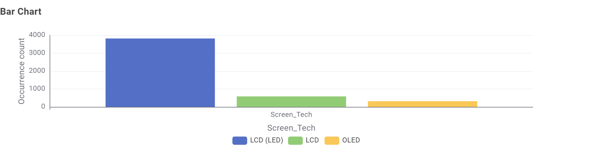
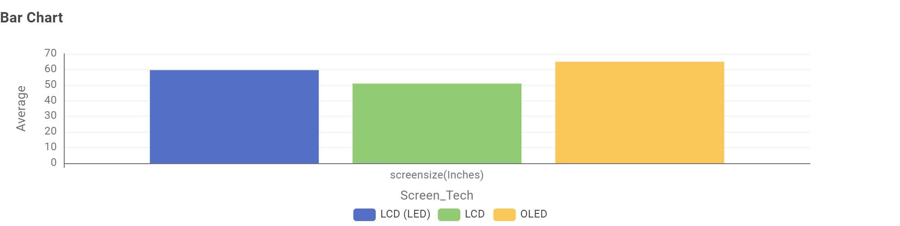
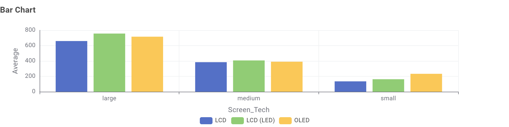

Chart 1: Which screen technologies are most common?

This chart shows that LCD and LCD (LED) televisions appear more often in the dataset than OLED televisions.
Chart 2: What is the average screen size of each type?

OLED TVs are larger on average in this dataset, which is important when comparing energy consumption.
Chart 3: Does screen size drive energy consumption?

Energy consumption increases as screen size increases. This suggests that screen size is a major factor affecting energy use.
Conclusion: OLED TVs may appear to use more energy, but part of this difference is because they are larger on average.